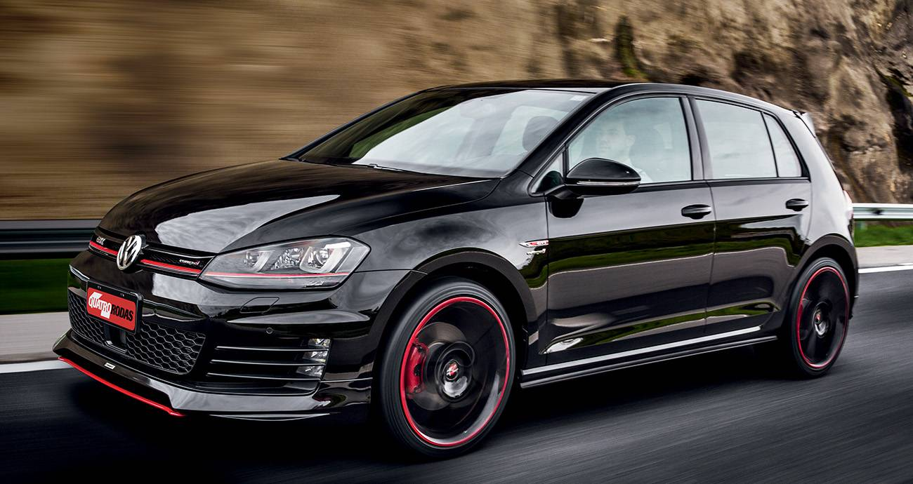
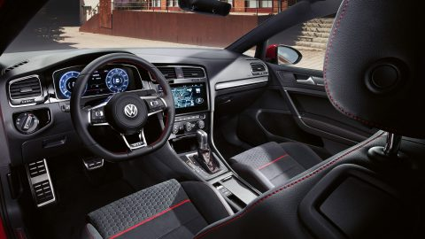

O novo Golf GTI acaba de chagar no brasil, com novo motor, com novas tecnologias para você melhorar sua vida e seus momentos na hora do laser ou até em passeio com a familía
.O primeiro VW Golf GTI fez a sua estreia há 41 anos, e até hoje é o mais bem sucedido carro esporte compacto do mundo. Em 2013 chegou o Golf Mk 7, com duas versões: uma versão 'padrão' com 220 cavalos e uma versão 'performance' que oferece 230 cv, sempre com tração dianteira.

Agora, em 2017, no âmbito de alterações visuais e técnicas, ambas as versões Golf GTI obtiveram mais potência. O carro 'standard' é foi mostrado no início do ano e agora desenvolve a mesma potência que o anterior Performance: 230 cv.
Agora a Volkswagen introduz o novo Golf GTI Performance. Sua nova potência: 245 cavalos - 15 cv a mais que o anterior. O torque máximo cresceu 20 Nm a 370 Nm e está disponível em uma faixa mais ampla de rotações (entre 1600 e 4300 rpm).Equipado com este motor, o Volkswagen Golf GTI Performance acelera de 0 a 100 km / h em apenas 6,2 segundos; sua velocidade máxima é eletronicamente governado a 250 km / h.

Estes valores aplicam-se aos desempenhos tanto da versão com uma caixa de velocidades manual de 6 velocidades e à versão com a caixa de dupla embreagem de 7 marchas DSG-7. No entanto, a versão DSG do GTI Performance é mais eficiente em termos de consumo, com média de 15,87 km/l.
Golf GTI 245 cv com recursos adicionais
Em comparação com a versão de 230 cv, o novo Volkswagen Golf GTI Peformance também tem mais recursos de série.